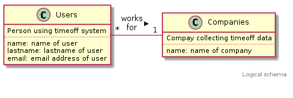

Schema design creates Logical Schema composed of ER diagram and
Entity definitions. In API design, Logical Schema is mapped to an
External Schema as timeoff-swagger.yaml using swagger 2.0 format
of Open API specification. This API specification is deployed into the
staging directory ../stage.

UserPerson using timeoff system
Attributes:
name: name of user lastname: lastname of user email: email address of user
CompanyOrganization collecting timeoff data
Attributes:
name: name of company
timeoff-swagger.yaml
The swagger 2.0 format interface specification below defines one
interface registerCompany(post) with request message composed of
string parameters user_name, user_lastname, user_email and
company_name, and a response message with fields code and
message.
# swagger.yaml - timeoff-manager interface in swagger format
# Generated 2018-01-30 13:01:38 +0200 by jj
---
swagger: '2.0'
info:
title: Timeoff demo
version: 1.0.1
description: Timeoff interfaces
paths:
"/registerCompany":
post:
operationId: registerCompany
description: Register company
parameters:
- name: user_name
type: string
in: query
- name: user_lastname
type: string
in: query
- name: user_email
type: string
in: query
- name: company_name
type: string
in: query
responses:
default:
description: Default response
schema:
"$ref": "#/definitions/ErrorModel"
definitions:
ErrorModel:
type: object
properties:
code:
type: integer
format: int32
message:
type: string